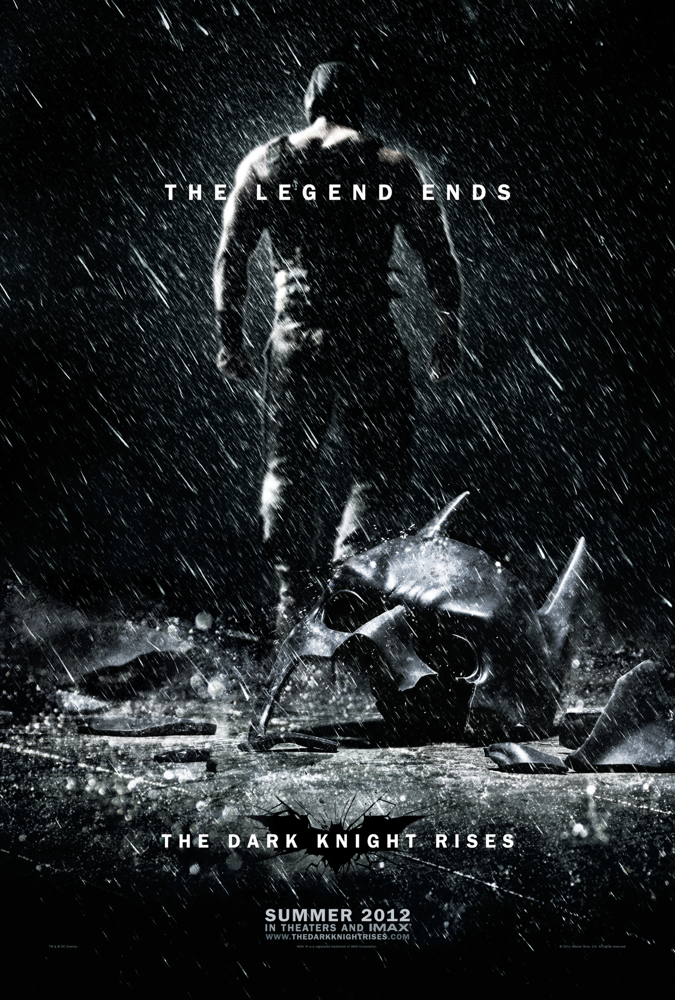
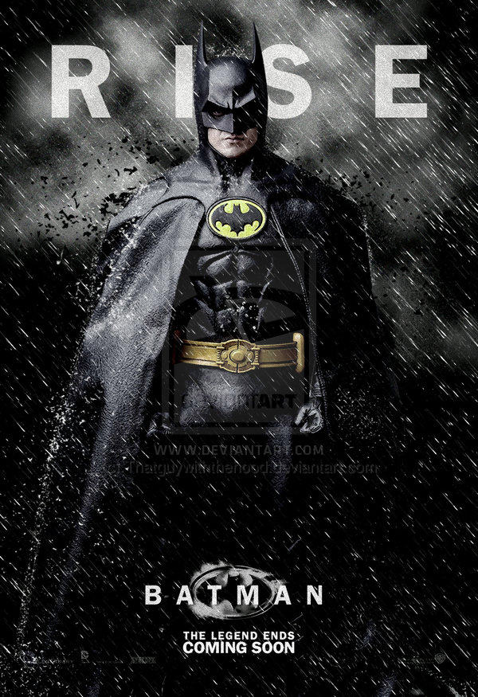

Batman Begins is a 2005 superhero film based on the fictional DC Comics character Batman, co-written and directed by Christopher Nolan. It stars Christian Bale as Batman along with Michael Caine, Liam Neeson, Katie Holmes, Gary Oldman, and Morgan Freeman.
The film reboots the Batman film series, telling the origin story of the character from Bruce Wayne's initial fear of bats, the death of his parents, his journey to become Batman, and his fight against Ra's al Ghul's plot to destroy Gotham City.
It draws inspiration from classic comic book story lines such as The Man Who Falls, Batman: Year One, and Batman: The Long Halloween. After a series of unsuccessful projects to resurrect Batman on screen following the 1997 critical failure of Batman & Robin, Nolan and David S. Goyer began to work on the film in early 2003 and aimed for a darker and more realistic tone, with humanity and realism being the basis of the film. The goal was to get the audience to care for both Batman and Bruce Wayne. The film, which was primarily shot in Iceland and Chicago, relied on traditional stunts and miniatures – computer-generated imagery was used minimally.
Click on the villains to put them in jail. Drag and resize them inside the jail cell.


Ra's al Ghul
.Ra's al Ghul ("Ghoul's Head") is a fictional character, a supervillain who appears in comic books published by DC Comics. Besides being considered to be one of Batman's greatest enemies, Ra's al Ghul is the son of Sensei, the father of Talia al Ghul, Nyssa Raatko, and Dusan al Ghul, and the grandfather of Damian Wayne. His name in Arabic has been translated in the comics as "The Demon's Head".[4][5]
Joker
The Joker is a fictional character, a comic book supervillain appearing in DC Comics publications. The character was created by Jerry Robinson, Bill Finger and Bob Kane, and first appeared in Batman #1 (April 25, 1940).
Credit for the character's creation is disputed; Kane and Robinson claimed responsibility for the Joker's design, while acknowledging Finger's writing contribution. Although the Joker was planned to be killed off during his
initial appearance, he was spared by editorial intervention, allowing the character to endure as the archenemy of the superhero Batman.
Bane
Bane is a super villain who appears in comic books published by DC Comics. The character's origin was in Batman: Vengeance of Bane #1 (January 1993), and was created by Chuck Dixon, Doug Moench, and Graham Nolan. Bane has been one of Batman's more physically and intellectually powerful foes. He is often credited for being the only villain to have "Broken The Bat". IGN's list of the Top 100 Comic Book Villains of All Time ranked Bane as #34.[1]Bane was portrayed by Robert Swenson in the 1997 film Batman & Robin, and by Tom Hardy as the main antagonist in the 2012 film The Dark Knight Rises.
Catch the Joker! Drag Batman to destroy the Joker!